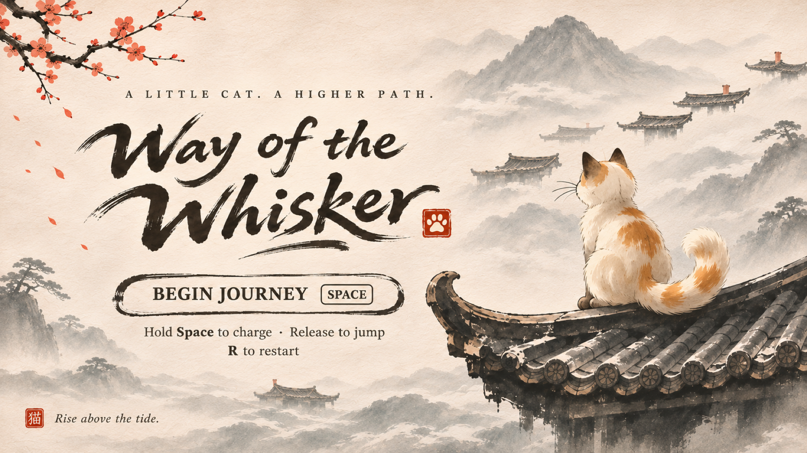

This game needs a local server.
In this folder run python3 -m http.server 8000 --bind 127.0.0.1
(Windows: py -m http.server 8000 --bind 127.0.0.1, or python instead of py)
then open http://localhost:8000
Loading…

Press Space or R to begin again